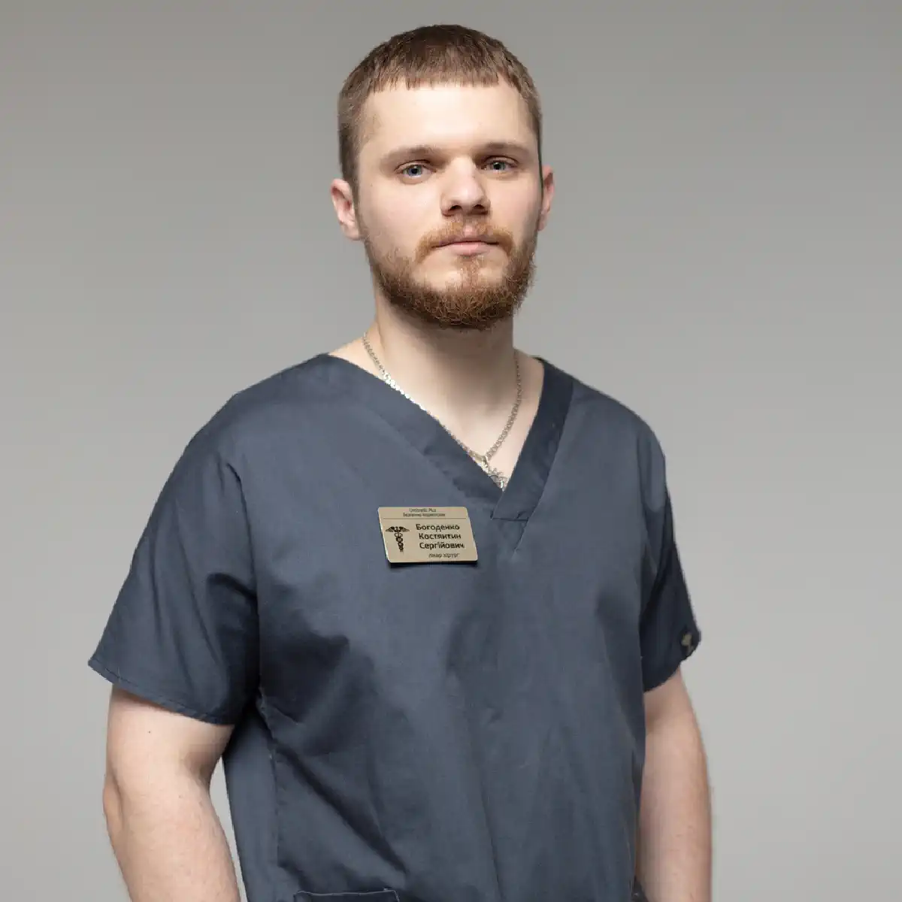

+38(068) 79 72 782
+38(068) 79 72 782Швидка допомога під час передозування наркотиками у Харкові
Коли потрібно дзвонити в 103


Безкоштовна консультація, працюємо цілодобово 24/7
Коли потрібно дзвонити в 103

Дата написання: 11 жовт. 2026 р.
Останнє оновлення: 12 жовт. 2026 р.
У разі підозри на передозування наркотиками необхідно негайно телефонувати 103 або 112. Особливо небезпечні втрата свідомості, рідкісне або нерегулярне дихання, судоми, сильний біль у грудях і виражене перегрівання організму. Швидка допомога при передозуванні наркотиками в Харкові потрібна незалежно від того, яку речовину було вжито та чи відома її кількість. Не слід чекати самостійного покращення стану або планового приїзду нарколога. Домашня крапельниця не замінює екстреної допомоги. Поки бригада прямує до пацієнта, залишайтеся на зв’язку з диспетчером і виконуйте його вказівки.
Передозування може проявлятися незвичною сонливістю, відсутністю реакції на звернення, порушенням дихання, сплутаністю свідомості або різким збудженням. Після вживання стимуляторів можливі сильне серцебиття, перегрівання, паніка та судоми. При опіоїдному отруєнні особливо небезпечне уповільнення дихання. Ознаки передозування наркотиками не завжди відповідають звичному уявленню про отруєння: людина може виглядати так, ніби спить, або певний час зберігати здатність розмовляти. Не можна оцінювати безпеку лише за розміром зіниць або ймовірною дозою. Якщо стан після вживання викликає підозру на передозування, необхідна екстрена медична оцінка.
Спочатку назвіть точну адресу, під’їзд, поверх, код дверей та орієнтири, які допоможуть знайти пацієнта. Потім повідомте, чи реагує людина на звернення, чи нормально дихає, чи є судоми, біль у грудях або сильне збудження. Виклик швидкої допомоги при наркотичному отруєнні не потрібно відкладати, якщо назва речовини невідома. Розкажіть про ймовірний час уживання, спосіб введення та поєднання з алкоголем або лікарськими препаратами. Якщо вже застосовувався налоксон, зазначте час і кількість введень. Не завершуйте розмову раніше за диспетчера та попередьте про можливі перешкоди для доступу бригади.
Переконайтеся, що наближатися до людини безпечно: поруч можуть бути голки, невідомі речовини або інші небезпечні предмети. Зателефонуйте 103, увімкніть гучний зв’язок і перевірте реакцію та дихання. Перша допомога при передозуванні наркотиками залежить від стану пацієнта. У разі втрати свідомості зі збереженим нормальним диханням необхідне стабільне бокове положення; за відсутності нормального дихання — реанімація. Якщо поруч є помічник, доручіть йому зустріти бригаду та принести налоксон, якщо він доступний. Не залишайте пацієнта самого заради пошуку упаковок або документів. Ці відомості корисні, але підтримка дихання та кровообігу важливіша.
Голосно зверніться до людини та обережно торкніться її плечей. Якщо реакції немає, покличте на допомогу та оцініть дихання протягом не більше ніж 10 секунд, обережно відкривши дихальні шляхи закиданням голови та підняттям підборіддя. Втрата свідомості після наркотиків потребує негайного виклику 103. Якщо дихання нормальне, поверніть людину на бік і постійно спостерігайте за нею. Якщо дихання відсутнє або спостерігаються лише поодинокі нерегулярні вдихи, починайте серцево-легеневу реанімацію. Не намагайтеся напоїти пацієнта або дати йому таблетки.
Незвичне хропіння, булькаючі звуки, тривалі паузи між вдихами та посиніння губ можуть свідчити про серйозне порушення дихання. Особливо насторожує поєднання цих ознак із неможливістю розбудити людину. Допомогу при пригніченні дихання після наркотиків не можна відкладати до повного припинення дихальних рухів. Повідомте диспетчеру, що дихання ненормальне, і дотримуйтеся його інструкцій. У разі підозри на опіоїди застосовують доступний налоксон відповідно до інструкції, одночасно забезпечуючи необхідну першу допомогу. Нормальний показник побутового пульсоксиметра не повинен бути підставою для відмови від виклику швидкої допомоги за очевидно небезпечного стану.
Якщо доросла людина не реагує та не дихає нормально, починайте реанімацію негайно, одночасно організувавши виклик 103. Покладіть її на спину на тверду поверхню. Виконуйте натискання на центр грудної клітки з частотою 100–120 за хвилину, глибиною 5–6 см, дозволяючи грудній клітці повністю розправлятися. Якщо вмієте та можете виконувати штучні вдихи, чергуйте 30 натискань із двома вдихами: при передозуванні підтримка дихання особливо важлива. Якщо виконати вдихи неможливо, продовжуйте натискання. Використовуйте автоматичний зовнішній дефібрилятор, якщо його приніс помічник, дотримуючись голосових підказок. Реанімацію при передозуванні не відкладають заради пошуку налоксону.
У разі судом після вживання наркотиків негайно викликайте 103. Приберіть небезпечні предмети навколо, захистіть голову м’якою річчю та зафіксуйте час початку нападу. Не утримуйте кінцівки та не намагайтеся розтискати щелепи. Допомога при судомах після наркотиків не передбачає введення предметів до рота: це може призвести до травми та порушення прохідності дихальних шляхів. Після припинення судом оцініть дихання. Якщо воно нормальне, поверніть людину на бік; якщо відсутнє або ненормальне — починайте реанімацію. Не давайте воду, їжу та таблетки людині, яка повністю не прийшла до тями.
Біль, відчуття тиску або печіння в грудях після вживання наркотиків потребують екстреної оцінки. Особливо небезпечне поєднання із задишкою, холодним потом, непритомністю, вираженим серцебиттям або перебоями в роботі серця. Невідкладна допомога при наркотичній інтоксикації необхідна навіть молодій людині без раніше встановленого захворювання серця. Припиніть фізичне навантаження, допоможіть пацієнту зайняти зручне положення та викличте 103. Не дозволяйте йому самостійно сідати за кермо. Не підбирайте серцеві препарати без вказівок медичного фахівця: лікування залежить від причини симптомів та вжитих речовин.
Висока температура, сильне потовиділення, дезорієнтація, галюцинації та виражене збудження після вживання наркотиків можуть супроводжувати небезпечну інтоксикацію. Екстрена допомога при отруєнні стимуляторами потрібна в разі швидкого погіршення стану, особливо якщо людина перестає адекватно реагувати на оточення. До приїзду бригади зменште шум, приберіть зайвих людей і забезпечте прохолодні умови, якщо це безпечно. Не сперечайтеся з маячними переконаннями та не намагайтеся самостійно силоміць утримувати пацієнта. У разі загрози оточенню зберігайте дистанцію та повідомте диспетчеру про ризик. Не залишайте людину без нагляду, наскільки це дозволяють умови безпеки.
Головна загроза при передозуванні опіоїдами — недостатнє дихання з подальшим кисневим голодуванням. Людину може бути важко розбудити, дихання стає рідкісним, а шкіра та губи змінюють колір. Допомога при передозуванні героїном, метадоном і фентанілом включає виклик 103, підтримку життєво важливих функцій і застосування налоксону за його наявності. Не потрібно чекати появи всіх ознак. Тривалість дії опіоїду може перевищувати тривалість дії антидоту, тому після пробудження зберігається необхідність медичного спостереження. Ймовірну назву речовини важливо повідомити бригаді, але вона не змінює пріоритету термінової допомоги.
Налоксон тимчасово усуває дію опіоїдів, яка спричиняє пригнічення дихання. Якщо є підозра на передозування та препарат доступний, застосовуйте його відповідно до інструкції конкретної лікарської форми та вказівок диспетчера. Налоксон при передозуванні опіоїдами не замінює виклик 103 і реанімацію. За відсутності достатнього ефекту повторне введення часто потрібне через 2–3 хвилини; орієнтуйтеся на інструкцію наявного препарату. Не припиняйте необхідну підтримку дихання в очікуванні ефекту. Налоксон не усуває отруєння стимуляторами, алкоголем або снодійними, хоча може допомогти за наявності опіоїдів у суміші.
Опіоїдні знеболювальні можуть спричиняти передозування незалежно від того, чи отримані вони за призначенням лікаря. При застосуванні налбуфіну можливі пригнічення дихання та свідомості, особливо в поєднанні з іншими речовинами, що пригнічують центральну нервову систему. Допомога при передозуванні налбуфіном потребує негайного звернення в разі вираженої сонливості, утрудненого пробудження та ненормального дихання. Повідомте бригаді назву препарату, концентрацію, ймовірну кількість і час введення, якщо вони відомі. Не вводьте додаткові знеболювальні або заспокійливі засоби. Наявність медичного призначення не виключає небезпечної реакції або помилки дозування.
Передозування стимуляторами може супроводжуватися різким збудженням, високою температурою, тахікардією, болем у грудях і судомами. Допомога при передозуванні амфетаміном і метамфетаміном спрямована на оцінку та лікування конкретних ускладнень. До приїзду швидкої забезпечте спокій і зменште зовнішні подразники. Не давайте алкоголь, снодійні або інші речовини для самостійного «заспокоєння». Якщо збудження змінилося втратою свідомості або порушенням дихання, негайно повідомте диспетчеру: можливе тяжке ускладнення або змішане отруєння. Єдиного домашнього антидоту, який усуває передозування стимуляторами, немає.
При вживанні синтетичних катинонів можливі тяжка тривога, параноя, галюцинації, перегрівання та серцево-судинні порушення. При інтоксикації Альфа-PVP описані судоми та пошкодження м’язової тканини. Допомога при отруєнні мефедроном та Альфа-PVP потребує виклику 103 у разі вираженого збудження, сплутаності свідомості, болю в грудях або високої температури. Не слід сприймати небезпечну поведінку виключно як психологічну проблему: вона може супроводжуватися тяжкими фізичними порушеннями. Не змушуйте людину активно рухатися та не намагайтеся лікувати її самостійно. Передайте медикам відомості про повторні приймання та інші речовини.
Кокаїн може спричиняти небезпечні порушення ритму, інфаркт, інсульт і судоми. Швидка допомога при передозуванні кокаїном необхідна в разі болю в грудях, раптового сильного головного болю, порушення мовлення або слабкості в кінцівках. При МДМА особливе значення мають перегрівання та порушення водно-сольового балансу. Спроба випити велику кількість води може погіршити зниження рівня натрію в крові. Допомога при отруєнні МДМА потребує медичної оцінки, особливо за наявності блювання, сплутаності свідомості та судом. Не змушуйте пацієнта пити літри води та не очікуйте, що відпочинок сам собою усуне загрозу.
Невідомий склад не є причиною відкладати виклик швидкої допомоги. Допомога при передозуванні невідомим наркотиком починається з оцінки свідомості та дихання, а подальші дії визначаються станом пацієнта. Опишіть диспетчеру симптоми, що спостерігаються, час їх появи та все, що відомо про вживання. Якщо це безпечно, збережіть упаковку або фотографію для медичної бригади. Не пробуйте речовину на смак, не нюхайте її та не беріть до рук використані голки. За наявності ознак опіоїдного передозування доступний налоксон застосовують відповідно до інструкції, навіть якщо опіоїд міг бути присутнім у суміші без відома людини.
Опіоїди, алкоголь і седативні препарати можуть посилювати пригнічення дихання при спільному вживанні. Стимулятор не робить таку комбінацію безпечною та може маскувати окремі прояви отруєння. Допомога при поєднанні наркотиків та алкоголю потребує повної інформації про всі прийняті речовини, включно зі снодійними та транквілізаторами. Не можна пояснювати глибоку сонливість лише кількістю випитого. Якщо людина погано реагує та ненормально дихає, необхідно телефонувати 103. Пошук послуги виведення із запою вдома Харків не повинен затримувати екстрену допомогу в разі підозри на змішане передозування.
Не можна залишати людину «проспатися», викликати блювання, давати алкоголь, каву або самостійно підібрані ліки. Не слід занурювати пацієнта в холодну ванну, змушувати ходити або завдавати болю, намагаючись привести до тями. Не давайте їжу та пиття до вказівок медичного фахівця. Перша допомога при наркотичному отруєнні повинна підтримувати дихання та безпеку, а не зводитися до спроби «вивести речовину». Не відкладайте виклик заради крапельниці або домашнього тесту на наркотики. При судомах не вкладайте предмети до рота та не утримуйте кінцівки.
Госпіталізація потрібна, коли необхідні спостереження, обстеження або лікування, які неможливо безпечно провести поза лікарнею. Порушення дихання, кома, повторні судоми, тяжке перегрівання та нестабільний кровообіг можуть потребувати інтенсивної терапії. Лікування наркотичної інтоксикації в стаціонарі визначається клінічним станом, а не лише назвою речовини. Пацієнту можуть знадобитися підтримка дихання, контроль серцевого ритму, антидоти та корекція ускладнень. Медичний заклад обирають за доступними можливостями надання допомоги. Звичайний реабілітаційний центр або кабінет для інфузій не замінює відділення екстреної допомоги.
Лікарі оцінюють життєво важливі показники та підбирають обстеження відповідно до симптомів. Можуть знадобитися ЕКГ, визначення рівня глюкози, електролітів, кислотно-основного стану, показників функції нирок і печінки. При перегріванні та вираженому збудженні перевіряють ознаки пошкодження м’язів, при болю в грудях — ураження серця. Обстеження після передозування наркотиками також враховує можливі травми та потрапляння блювотних мас у дихальні шляхи. Токсикологічні тести не виявляють усі речовини та не замінюють огляд. Невідкладне лікування починають за клінічними показаннями, не очікуючи підтвердження конкретного наркотику.
Після початкового полегшення токсична дія речовини може зберігатися або проявлятися повторно. Це особливо важливо після застосування налоксону: дія опіоїду іноді триває довше за дію антидоту. Спостереження після передозування необхідне навіть тоді, коли людина прокинулася та вважає себе здоровою. Тривалість контролю визначають лікарі з урахуванням імовірної речовини, проведеної допомоги та динаміки стану. Не можна скасовувати виклик швидкої лише через короткочасне покращення. Повідомляйте бригаді про будь-які зміни та не залишайте пацієнта без нагляду до передачі медичним фахівцям.
Після стабілізації важливо обговорити причини епізоду та заходи запобігання повторному передозуванню. Консультація нарколога в Харкові допомагає оцінити вживання, необхідність лікування залежності та супутні психічні або фізичні проблеми. При опіоїдній залежності розглядають відповідну медикаментозну терапію, доступ до налоксону та навчання близьких першої допомоги. Після перерви толерантність знижується, тому повернення до попередньої кількості опіоїду особливо небезпечне. Лікування наркотичної залежності в Харкові слід узгодити до завершення спостереження або невдовзі після виписки, щоб людина розуміла, куди звертатися за подальшою підтримкою.
Телефон для консультації та виклику нарколога додому в Харкові: +38(050-021-69-57)

Статтю перевірено експертом
Могучев Станіслав
Лікар-терапевт, ординатор
Можливо цікава стаття:
Як очиститися від наркотиків — дієві поради

Лікування наркотичної залежності починається з консультації та оцінки стану пацієнта. Лікар уточнює, які речовини вживалися, як довго і в яких кількостях, коли був останній прийом, чи є симптоми абстиненції, хронічні захворювання та попередні спроби лікування. При інтоксикації або вираженому синдромі відміни першим етапом може стати медична детоксикація та стабілізація стану. Після цього складається подальший план лікування залежності.
У деяких випадках медичну допомогу можна надати вдома, однак це залежить від виду вжитої речовини, вираженості інтоксикації або абстиненції та загального стану пацієнта. Перед початком лікування нарколог оцінює свідомість, дихання, артеріальний тиск, пульс і можливі ускладнення. При тяжкому стані або високому ризику ускладнень потрібне лікування в стаціонарі.
Стаціонар необхідний, якщо стан пацієнта неможливо безпечно контролювати вдома. Показаннями можуть бути порушення свідомості, пригнічення дихання, судоми, виражене збудження або психоз, тяжке зневоднення, серйозні серцево-судинні порушення, одночасне вживання кількох речовин або тяжкі супутні захворювання. Деякі види синдрому відміни також потребують медичного спостереження та спеціалізованого лікування.
Програма детоксикації підбирається індивідуально та залежить насамперед від речовини й стану пацієнта. Вона може включати медичне спостереження, корекцію зневоднення та електролітних порушень, симптоматичну терапію та препарати для зменшення проявів синдрому відміни. Для деяких видів залежності існують спеціальні медикаментозні методи лікування. Детоксикація допомагає пройти гострий період, але сама по собі не усуває наркотичну залежність.
Тривалість детоксикації індивідуальна. Вона залежить від речовини, тривалості та частоти вживання, дозування, поєднання кількох речовин і стану організму. У одних пацієнтів найбільш виражені симптоми минають за кілька днів, у інших медичне спостереження та лікування потрібні довше. Точні строки можна визначити лише після оцінки стану пацієнта.
При деяких варіантах легкого або помірного синдрому відміни лікування можливе амбулаторно або вдома під наглядом лікаря. Однак тяжка ломка, виражене зневоднення, порушення свідомості, психічні розлади, судоми або серйозні супутні захворювання потребують стаціонару. Тактика також суттєво залежить від виду наркотичної речовини.
Єдиного строку не існує. Тривалість ломки залежить від речовини, її дози, тривалості вживання та індивідуальних особливостей організму. Гострі симптоми можуть тривати кілька днів і довше, а порушення сну, тривожність, знижений настрій і потяг до речовини іноді зберігаються після завершення гострого періоду. Тому після детоксикації важливо продовжувати лікування залежності.
Наркотична залежність є хронічним, але таким, що піддається лікуванню, розладом. При комплексному лікуванні можна досягти тривалої стійкої ремісії, припинити вживання наркотиків і значно покращити якість життя. Для цього зазвичай недостатньо лише зняти ломку або провести детоксикацію — потрібна подальша робота із залежністю та профілактика рецидиву.
Лікування може включати медичну детоксикацію, медикаментозну терапію, психотерапію, мотиваційну роботу, лікування супутніх психічних і соматичних порушень, профілактику рецидиву та реабілітацію. При опіоїдній залежності можуть застосовуватися спеціалізовані медикаментозні програми. Конкретна схема лікування визначається індивідуально.
Для планового лікування важливі участь самого пацієнта та його готовність співпрацювати з лікарем. Якщо людина відмовляється від допомоги, родичі можуть отримати консультацію спеціаліста та обговорити способи мотивувати її звернутися за лікуванням. Якщо стан людини становить безпосередню загрозу життю — наприклад, при передозуванні, порушенні свідомості або дихання — необхідна екстрена медична допомога.
Не варто обмежуватися погрозами, конфліктами або спробами силоміць змусити людину лікуватися. Родичі можуть звернутися до спеціаліста без пацієнта та отримати рекомендації щодо подальших дій. Мотиваційна робота допомагає людині краще усвідомити наслідки вживання та поступово сформувати готовність до лікування.
Не кожному пацієнту потрібен однаковий формат реабілітації, однак після детоксикації подальше лікування є дуже важливим. Детокс усуває або зменшує гострі прояви інтоксикації та синдрому відміни, але не вирішує психологічні й поведінкові механізми залежності. Реабілітація, психотерапія та інші програми підтримки допомагають закріпити тверезість і знизити ризик повторного вживання.
Так, у низці випадків нарколога можна викликати додому для оцінки стану пацієнта після вживання наркотиків. Лікар визначає вираженість інтоксикації або абстинентного синдрому та вирішує, чи можливе безпечне лікування вдома, чи потрібна госпіталізація. При втраті свідомості, вираженому пригніченні дихання, судомах, тяжкому збудженні або підозрі на передозування необхідно звертатися по екстрену медичну допомогу.
Анонимно

Помогли при ломке
Анонимно
Хочу поблагодарить специалистов фирмы «Амбрела плюс» за реальную помощь в сложный период. Обратился в состоянии ломки, было тяжело и физически, и морально. Врачи отреагировали быстро, всё объяснили, поддерживали на каждом этапе. Состояние стабилизировали, стало значительно легче уже в первые часы. Спасибо за профессионализм и человеческое отношение.
Номер телефону:
+380 (68) 797 27 82
+380 (50) 021 69 57
Адресу наркологічного центра вашого міста уточнюйте за
телефоном
Працюємо: Київ, Одеса, Львів, Харків, Дніпро, Запоріжжя,
Черкасах, Чугуєві, Чорноморську, Кам'янському
Telegram: t.me/umbrellaplus
Графік работы: Цілодобово